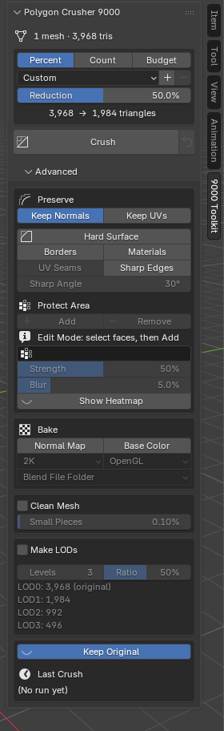

Settings Reference
All settings are in the Polygon Crusher 9000 panel. Open the 3D Viewport sidebar (press N) and click the 9000 Toolkit tab. The panel starts collapsed every time you open Blender or load a file.
The panel has two levels:
- The main panel shows a status line, the Mode menu, the Target box, and the Crush and Revert buttons. For most models this is all you need.
- Advanced is a collapsed section under it. It holds Preserve, Protect Area, Bake, Clean Mesh, LODs and Output (Keep Original and the Last Crush results) as groups that fold on their own, each with a line saying what it is for. A mode opens the groups it uses and folds the rest; nothing is hidden.
Options that do not apply right now are greyed out instead of hidden. For example, Strength is grey until a Protect Area is set.

Status line
The first line of the panel says what it is looking at: the number of selected meshes and their triangle total. With nothing selected it says "Select a mesh object to start".
Mode
Dropdown — default Auto
What kind of model this is. A mode sets the Preserve and Clean Mesh values for you; see Modes.
- Auto looks at the selected mesh and shows what it found under the menu ("Looks like a scan: rough surface all over. Found: 120 spikes, 11 small holes"), then applies Scan, Sculpt or Hard Surface. Meshes over 600,000 triangles show a Detect button instead of looking by themselves.
- Scan, Sculpt, Hard Surface apply that mode's values.
- Custom is your own settings. Changing a mode-controlled value by hand shows Custom (from Scan) and a Reset to Scan defaults button.
What's on
When anything inside Advanced is switched on, a line under Crush lists it, for example "On: Keep UVs · Clean mesh · Spikes · Holes". So a folded group never hides what the next crush will do. When Keep Original is off, a warning under Crush says the original will be deleted.
Target
The Target section decides how many triangles you end up with. See Target Modes for how to choose between the three modes.
Target Mode
Three buttons: Percent, Count, Budget — default Percent
- Percent — remove a share of the triangles.
- Count — crush each selected object to a triangle count.
- Budget — one triangle total for the whole selection.
The control below the buttons changes with the mode.
Preset (Percent mode only)
Dropdown with + and − buttons — default Custom
Presets save and recall a set of settings. See Presets below.
Reduction (Percent mode)
Slider — 1% to 99% — default 50%
Percentage of triangles to remove. 50% removes half of them. Dragging the slider covers 5% to 95%. You can type a value from 1% to 99%.
The result never has fewer than 4 triangles.
Target Triangles (Count mode)
Number — minimum 4 — default 5000
The triangle count each selected object is crushed to. If an object already has fewer triangles than this, it is not made bigger: the target is clamped to the object's own triangle count.
Total Triangles (Budget mode)
Number — minimum 4 — default 100,000
The triangle total for all selected objects together.
Triangle readout
Under the target control, the panel shows before → after triangles, added
up over the selected meshes. It uses the same rounding as the crush. The
readout is hidden while Make LODs is on.
The "after" number is the target, not a promise. See Limits.
Import and Crush...
Button under Crush
Opens a file browser for an .obj, .ply or .stl file. The engine reads the file and crushes it; only the result is built in Blender. The file browser's side panel shows the Target, the Mode menu, Keep UVs (and textures) with Low Distortion, Clean Mesh with the three Scan Repair switches, and an OBJ is Y up switch. See Import and Crush.
Advanced
Everything below lives in the Advanced section. It starts collapsed; click its header to open it. Inside, each group (Preserve, Protect Area, Bake, Clean Mesh, LODs, Output) has its own fold arrow and a line under its title saying what it is for.
Preserve
Keep Normals
Toggle button — default on
Copies the original's surface normals onto the crushed mesh, so smooth shading survives even when the topology changes a lot. Crease corners keep their own normals.
Leave this on in almost all cases. Turning it off gives flat, faceted shading on smooth surfaces.
Greyed out while Normal Map baking is on. The bake uses the crushed mesh's own smooth shading instead. See Bake Maps and Auto UVs.
Keep UVs
Toggle button — default off
Carries the active UV map through the crush, so textures still line up. If the mesh has no UVs, this does nothing. Turn it on when the crushed mesh must keep its UV layout. With it off, baking makes new UVs for the crushed copy. See Bake Maps and Auto UVs.
Low Distortion
Checkbox under Keep UVs, default on, greyed out unless Keep UVs is on. A collapse that would fold a face's texture mapping over itself, or flatten it to a line, is refused and the crush picks another edge. This is what leaves smeared or mirrored texture patches on a heavily crushed scan. Costs a few percent of crush time. Since 2.7.1 the crush still reaches the target with it on (it relaxes the rule in stages once it runs out of safe collapses). Turn it off for the plain crush (the 2.5.x behaviour).
Keep in place
The four options below keep edges where they are. Since 2.7.1 a kept edge is a cost rather than a lock: the crush touches it last and still reaches the count you asked for. Hard Surface mode turns them all on and sets Sharp Angle to 30°. See Hard Surface Preservation.
Borders
Toggle button — default off
Keeps open borders (holes and cut edges) in place.
Materials
Toggle button — default off
Keeps the borders between materials in place.
UV Seams
Toggle button — default off
Keeps UV seams in place, so textures do not smear across them. Needs Keep UVs. The button is greyed out when Keep UVs is off.
Sharp Edges
Toggle button — default off
Keeps hard edges crisp: edges you marked Sharp, plus edges sharper than Sharp Angle. Bumps from scan noise are ignored. On a mesh that looks like a scan, only the edges you marked Sharp are kept. The crushed mesh gets these edges marked Sharp too.
Sharp Angle
Angle — 1° to 180° — default 30°
Edges where two faces meet at more than this angle count as sharp. Greyed out unless Sharp Edges is on.
Symmetry
Toggle button + X / Y / Z — default off, axis X
Keeps a mirrored model mirrored: both halves are crushed the same way and the center line stays straight and closed. The axis is the object's own X, Y or Z through its origin, the same as Blender's Mirror modifier and Decimate's Symmetry. If the object has an active Mirror modifier, its axis is used instead (also when it mirrors across another object) and the axis buttons are greyed out. If little of the model is actually mirrored on that axis, the report says so. Not used by Budget or Import and Crush.
Protect Area
Its own group in Advanced. Add and Remove buttons, and a vertex group field — default empty
Marks areas that keep more detail. In Edit Mode, select faces, edges or vertices and click Add. They go into a vertex group named Protected (or the group already in the field), and the field fills in. Remove takes the selected parts back out. Both buttons only work in Edit Mode.
You can also pick a vertex group you painted yourself in the field. When the active object is a mesh, the field lists that object's vertex groups. See Protect Areas.
Strength
Slider — 0% to 100% — default 50%
How strongly the Protect Area resists crushing. Greyed out until a Protect Area is set.
Blur
Slider — 0% to 100% — default 5%
How far the protection fades out from the marked area, as a share of the object's size. 0% makes a hard edge. Dragging covers 0% to 25%; you can type up to 100%. Greyed out until a Protect Area is set.
Show Heatmap
Toggle button — default off
Colors the selected objects in the viewport by how strongly each part is protected, with the Blur fade included: blue is free to crush, red is fully protected. It is only a viewport overlay; nothing is added to the scene.
Bake
Bakes the original's detail onto the crushed mesh as texture maps. See Bake Maps and Auto UVs.
Normal Map
Toggle button — default off
Bakes the original's surface detail into a normal map and connects it in copies of the crushed mesh's materials.
Base Color
Toggle button — default off
Bakes the original's color into a base color map and connects it in copies of the crushed mesh's materials: the image textures feeding Base Color in its materials, or its vertex colors (active color attribute) where a material has no image. Objects with neither are skipped.
Size
Dropdown — 512, 1K, 2K, 4K — default 2K
Resolution of the baked maps. Greyed out until Normal Map or Base Color is on.
Normal Y
Dropdown — OpenGL or DirectX — default OpenGL
Green channel convention of the saved normal map.
- OpenGL (green up): Blender, Unity, Godot.
- DirectX (green down): Unreal. It still looks correct in Blender.
Greyed out unless Normal Map is on.
Save To
Dropdown — Blend File Folder or Custom Folder — default Blend File Folder
Where the baked maps are saved.
- Blend File Folder — the same folder as the .blend file. If the file has never been saved, the maps are packed into the .blend instead. The panel shows "Unsaved: maps get packed".
- Custom Folder — a folder you pick in the Folder field. Paths that
start with
//are relative to the .blend file. If the field is empty, Crush stops and asks you to pick a folder.
Clean Mesh
Clean Mesh
Checkbox — default off
Repairs the mesh before crushing. See Clean Mesh.
Remove Small Pieces
Slider (labelled Small Pieces in the panel) — 0% to 5% — default 0.1%
Deletes loose pieces that are smaller than this share of the mesh's triangles. 0% keeps every piece. Greyed out unless Clean Mesh is on.
Scan Repair
Three switches under Clean Mesh, greyed out unless it is on. Scan mode and Auto tick them from what the engine finds. See Scan Repair.
- Cut Floor (checkbox, default off) with Height (0% to 50%, default 0% = find the floor by itself): removes the table or ground captured under the model.
- Remove Spikes (checkbox, default off): pulls points shot out of the surface back in and drops long stretched faces.
- Fill Holes (checkbox, default off) with Size (0.1% to 50%, default 5%): closes holes whose outline is up to this share of the model's size.
LODs
Make LODs
Checkbox — default off
Makes a chain of LODs instead of one crushed copy. While it is on, the Target section and Keep Original are greyed out, and the Crush button reads Crush LODs. See LODs.
Levels
Number — 1 to 8 — default 3
How many LOD levels to make. The original stays as LOD0.
Ratio
Slider — 5% to 95% — default 50%
The share of triangles each level keeps compared to the level before it. With 50%, the levels have 50%, 25%, 12.5% of the original, and so on.
When an object is active, the panel lists the triangle count of every level under these two controls.
Levels and Ratio are greyed out until Make LODs is on.
Output
The last group in Advanced: where the result goes, and the last crush.
Keep Original
Checkbox — default on
When on, the original object is hidden (eye icon off) after the crush, so you can compare or go back. When off, the original is deleted and only the crushed result remains.
Greyed out while Make LODs is on, because LODs always keep the original. Revert only works when the original was kept. See Keep Original and Revert.
Crush and Revert
These sit in the main panel, under the Target box.
Crush — the main button for every mode. It is available when at least one mesh object is selected. While a crush runs, the button turns into a progress bar. Press ESC to cancel.
Revert — the small icon button next to Crush. Deletes the selected crushed object and brings back its original. Greyed out when there is nothing to revert. See Keep Original and Revert.
When the native binary is missing, the panel shows "Native binary not found" and Crush refuses to run. See Troubleshooting.
Presets
Presets work in Percent mode only. The preset row has a dropdown and + and − buttons.
Built-in presets set the amount only: Light · 25%, Medium · 50%, Heavy · 75%, Extreme · 90%. What to keep is the Mode's job, so picking one leaves Keep UVs and the Preserve options alone (before 2.7.0 they switched Keep UVs off).
A .blend saved with one of the older built-in presets (from before 2.4.0) opens with the dropdown on Custom. Its values are kept.
A preset you save stores: Reduction, Keep Normals, Keep UVs, the four Preserve options, and Sharp Angle, and applies all of them (the Mode then shows Custom). It does not store the target count, Protect, Bake, Clean Mesh, or LOD settings.
- + — save the current values as a new preset. You type a name. Saving under the name of one of your own presets replaces it. You cannot use a built-in preset name.
- − — delete the selected preset. It is only enabled for presets you saved, and it asks you to confirm. Built-in presets cannot be deleted.
- Your presets are kept in the add-on preferences, so they stay after you restart Blender.
- Custom means no preset is selected. If you change Reduction, Keep Normals, Keep UVs, a Preserve option or Sharp Angle by hand, the dropdown goes back to Custom.
Last Crush
Under Keep Original in the Output group. It shows the most recent crush of the active crushed object:
- Object — the crushed object's name.
- Triangles — before → after.
- Total time — the whole crush for this object.
- Passes — how many passes the engine made.
Click Details to see the time of each phase:
| Phase | What it measures |
|---|---|
| Extract | Reading the source mesh |
| Write | Writing the input for the native binary |
| Crush | The native simplifier |
| Read | Reading the binary's output |
| Build | Creating the new Blender mesh and object |
| Bake Normals | Transferring the original's normals (Keep Normals) |
"Bake Normals" here is the Keep Normals transfer. It is not the normal map bake.
When several objects are selected, their crushes run at the same time, so the phase timings can add up to more than the wall-clock time. That is expected.
The numbers are only kept for the current Blender session. If you select an object that was not crushed in this session, it says there are no stats for it.